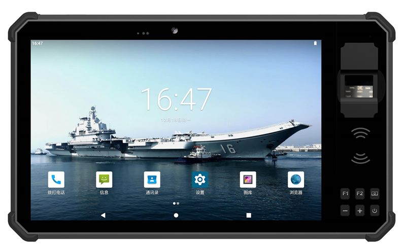

Rugged Tablet Battery Life: What the Numbers Mean
Battery capacity · Runtime claims · Cold weather · Charging strategy

The XH-500 carries a 10,000 mAh pack: 38 Wh, and the runtime depends on the duty cycle rather than the number on the battery.
What mAh does and does not tell you
Milliamp-hours describe charge, not energy. To compare two devices you need the voltage as well: a 10,000 mAh pack at 3.8 V holds 38 Wh, while a 5,000 mAh pack at 7.6 V holds the same 38 Wh. Marketing pages quote mAh because the number looks larger; engineers quote watt-hours because that is what the load consumes.
So the first question about any rugged tablet battery is not "how many mAh" but "how many Wh, at what voltage, and what does the datasheet assume about the load". A device with 38 Wh and an honest test condition is easier to plan around than one with 50 Wh and no stated condition.
Where the energy actually goes
A 10-inch rugged tablet spends its energy in four places, and only one of them scales with what the operator is doing.
| Load | Typical draw | What moves it |
|---|---|---|
| Display and backlight | 2–4 W at 10 inches | Brightness setting. This is the single largest lever, and it is a setting, not a component |
| Processor and memory | 1–3 W average | Application load, screen refresh, background sync |
| Cellular radio | 1–3 W connected | Signal strength. A weak cell doubles the transmit power and shortens the shift |
| Scanning and GNSS | Bursts of 0.5–1 W | Duty cycle. Thousands of short scans are cheaper than continuous tracking |
Add those up for a picking shift - screen at 60%, WiFi rather than 4G, a scan every few seconds - and the average sits somewhere between 3 and 4 W. On a 38 Wh pack that is roughly nine to twelve hours. Raise the brightness to maximum in sunlight and turn on 4G, and the same pack gives six or seven. The battery did not change; the duty cycle did.
Reading a datasheet runtime honestly
Datasheets in this market usually quote video playback, because it is repeatable in a lab. A representative line is "10 hours of 1080p playback at 70% volume and 70% brightness". That number is not wrong - it is a defined test - but it describes a device playing a video file, not a device scanning cartons with the screen at full brightness.
Three questions turn such a claim into something you can plan with:
- What was the load? Video playback, an office-document loop, or a scripted scan sequence. The last is the most useful and the least common.
- What was the brightness? 70% is a reasonable lab setting and an unrealistic warehouse setting in daylight.
- What was excluded? Radios off, GNSS off, no background sync. Every one of those is on in a real deployment.
If a supplier cannot answer all three, treat the runtime as indicative and plan for a spare pack or a mid-shift top-up. That is a cheaper decision than discovering it in month two.
Cold weather: why the pack loses half its capacity
Lithium-ion cells do not lose energy in the cold; they lose the ability to release it. At −20 °C a pack typically delivers 50 to 70 percent of its rated capacity, and internal resistance rises sharply. The device does not warn you gracefully: a current spike from the scanner or the radio pulls the terminal voltage under the cutoff and the unit shuts down, then reports two bars when it warms up.
This is why a cold-store deployment cannot be planned from the room-temperature runtime. The cold storage notes cover the failure pattern in detail; the planning consequence is simpler: for sub-zero work, assume half the pack and plan a warm charging point outside the freezer.
Charging strategy: three options, three trade-offs
| Strategy | Fits | Cost of getting it wrong |
|---|---|---|
| USB-C PD top-up | Office, field service, vehicle with a PD charger | Slow on a standard 5 V port; needs a PD source to reach full rate |
| Dock with pogo pins | Forklifts, counters, fixed stations | Dock price per position, plus the discipline of actually docking |
| Spare pack swap | Multi-shift operations, cold stores | Only works if the pack is removable and the swap is designed into the housing |
The cheapest of the three is usually the one that matches how the shift already works. A dock that nobody returns the device to is worse than a spare pack in a cupboard, and a spare pack in a device with a sealed housing is an expensive shelf item.
What to ask a supplier
Six answers turn this from a datasheet number into a plan:
- Watt-hours, not just mAh. Capacity and voltage together, so devices can be compared.
- The listed test condition. Playback or scripted workload, brightness, radios on or off.
- Charge time from empty, and with what adapter. "Supports fast charging" is not a time.
- Cycle life. What capacity remains after 500 full cycles - typically 80 percent, but ask.
- Operating temperature, and the capacity at the cold end. A range without a capacity figure does not answer the freezer question.
- Whether the pack is field-replaceable. If it is not, the replacement plan is a factory return, and that belongs in the TCO model.
When the battery is the wrong problem
Most "battery life" complaints turn out to be one of three other things. Screens left at maximum brightness because nobody set a default profile. Background sync running every few minutes over a weak cell signal. Devices that never reach a charger because the shift ends at the charger's location, not the device's.
All three are cheaper to fix than a bigger pack. Before specifying a higher-capacity model, look at the cost-of-ownership model: the difference between a 38 Wh and a 48 Wh device is usually smaller than the cost of one unplanned hour of downtime per shift.
Frequently Asked Questions
How many hours should a rugged tablet battery last?
Is 10,000 mAh enough for a 12-hour shift?
Does cold weather really halve battery life?
Can the battery be replaced in the field?
What is USB-C PD and does it matter?
Do fast charging and battery life conflict?
Related reading
Related reading: Industrial Handheld PDA: Specification Checklist · Rugged Tablet for Cold Storage · Rugged Tablet TCO · IP65 vs IP67 vs IP68